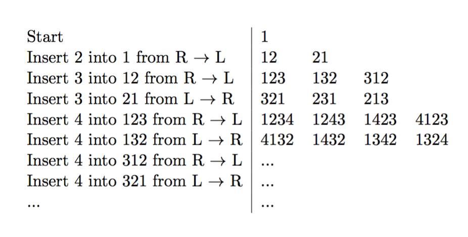

CMPT 306
Lab 6
Permutations
Select a partner on your own and sign up.
This lab will involve implementing two algorithms for generating
permutations: (1) minimal change, and (2) Johnson-Trotter
*** Looking ahead, your solution to this lab will be used to solve a
problem on the take-home Midterm exam.
Minimal Change
The minimal change algorithm is highlighted below:

The following program can be used as a starting point for this lab:
- (Jupyter Notebook User) MinimalChange.ipynb
- (Eclipse User) MinimalChange.py
Pass the number of permutations as a parameter to the program. For
example, if you pass 5, it will first create the Python list [1, 2,
3, 4, 5] and then pass this initial list to the permutate()
function. The permutate() function will
generate a list of tuples containing all of the permutations
of the values from 1 to 5.
Please learn python tuple from here .
Remember that (1,) is a tuple while (1) is not.
Given that the permutate() function returns a
list of tuples - and that tuples are immutable - you will likely
have to turn a list into a tuple, and vice-versa. Python provides
two convenience functions that perform this: tuple()
and list(), and you are welcome to use these
functions.
Here are my solutinos:
Please input a number:1
[(1,)]
Please input a number:2
[(1, 2), (2, 1)]
Please input a number:3
[(1, 2, 3), (1, 3, 2), (3, 1, 2), (3, 2, 1), (2, 3, 1), (2, 1, 3)]
Please input a number:4
[(1, 2, 3, 4), (1, 2, 4, 3), (1, 4, 2, 3), (4, 1, 2, 3), (4, 1, 3, 2), (1, 4, 3, 2), (1, 3, 4, 2), (1, 3, 2, 4), (3, 1, 2, 4), (3, 1, 4, 2), (3, 4, 1, 2), (4, 3, 1, 2), (4, 3, 2, 1), (3, 4, 2, 1), (3, 2, 4, 1), (3, 2, 1, 4), (2, 3, 1, 4), (2, 3, 4, 1), (2, 4, 3, 1), (4, 2, 3, 1), (4, 2, 1, 3), (2, 4, 1, 3), (2, 1, 4, 3), (2, 1, 3, 4)]
Johnson-Trotter
Implement the Johnson-Trotter algorithm as described in class. Use
the following code as a starting point:
- (Jupyter Notebook User) JT.ipynb
- (Eclipse User) JT.py
This program is passed a parameter which specifies the number of
elements to permutate, just as was done with minimal change.
Read through the existing permutate() function
JT.py . You will notice it creates a dictionary
called mappings where the keys are the integer values in the list to
be permutated (i.e. 1, 2, 3, etc) and the value is a boolean which
represents a direction where False is a
left-arrow, and True a right-arrow.
JT.py contains some functions which you may find
helpful when implementing the Johnson-Trotter algorithm. These
include:
- reverseDirection() which reverses the
direction of all elements in the list that are larger than k
- findLargestMobileElement() which determines
the largest mobile element in the list. This is an interesting
function as it must be able to determine if there is a mobile
element. The sentinel value of the largest mobile element is
negative infinity. If there are no mobile elements, the value of the
largest mobile element returned from this function is negative
infinity. This will be the case you will test for when determining
when to break out of the loop in the Johnson-Trotter algorithm.
Notice that findLargestMobileElement() uses the
isMobile() function which determines if an
element at a specific position in the list is mobile.
Be sure to test your implementation of Johnson-Trotter. (This can
easily be done by making a few small modifications to the TestMinimalChange.py
unit test.)
What to Hand In
Submit MinimalChange.py and JT.py
to the Canvas dropbox for Lab #6.